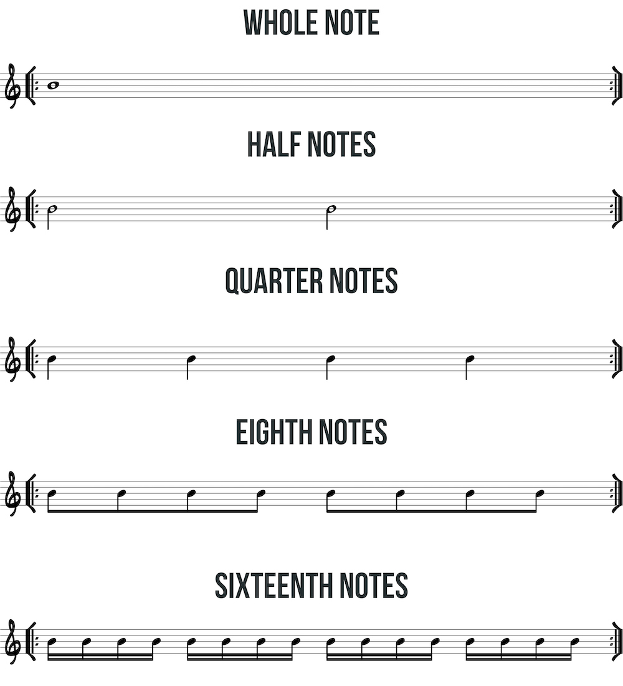

Subdivision practice is a useful way to work on technique, time, and reading. Apply these subdivisions to single notes, scales, chords, exercises, or really anything. Practice slowly and intentionally with a metronome. Try to “bury” the beat so that you almost don’t hear the click of the metronome. Use all possible picking patterns.
